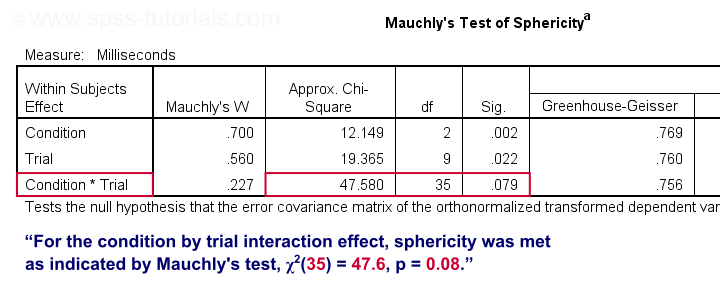
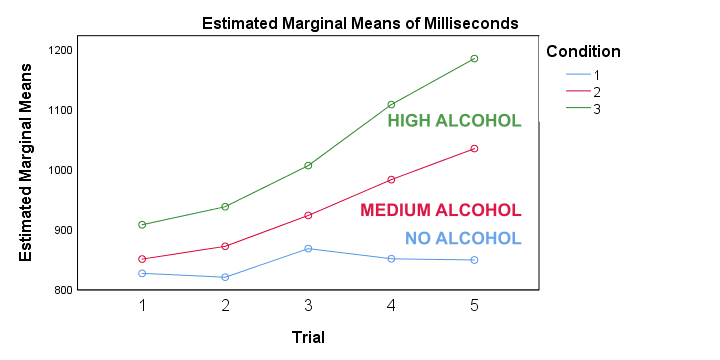

SPSS 重复测量方差分析 (RM ANOVA) - 双因素组内设计
作者：Ruben Geert van den Berg，分类：方差分析 (ANOVA)
酒精摄入如何影响驾驶表现？一项研究测试了 36 名参与者在 3 种条件下 的表现：
- 无酒精 - 0 杯啤酒；
- 中等酒精 - 2 杯啤酒；
- 高酒精 - 4 杯啤酒。
每位参与者在连续 3 天内，以随机顺序完成所有 3 种条件。在每种条件下，参与者在驾驶模拟器中驾驶 30 分钟。在这些“驾驶”过程中，他们会遇到 5 次试验：需要快速做出反应的危险情况。15 个反应时间（3 种条件下的每次试验 5 个）在 alcoholtest.sav 文件中，部分数据如下所示。
主要的 研究问题 是：
- 酒精如何影响反应时间？
- 试验如何影响反应时间？
- 酒精的影响是否取决于试验？
我们显然会检查在（条件和试验的组合）上的平均反应时间。但是，我们只有 36 名参与者。基于这个小样本，我们可以对一般人群得出什么结论（如果有的话）？回答这个问题的正确方法是对我们的 15 个反应时间变量运行 重复测量方差分析 (repeated measures ANOVA)。
重复测量方差分析 - 零假设
通常，重复测量方差分析的零假设是 3 个或更多变量的总体均值都是 相等 的。如果这是真的，那么相应的样本均值可能会有所不同。但是，如果总体均值相等，则 非常 不同的样本均值是不太可能的。因此，如果发生这种情况，我们不再相信总体均值是真正相等的：我们拒绝这个零假设。
现在，对于 2 个因素——条件 (condition) 和试验 (trial)——我们的均值可能会受到条件、试验或条件和试验的组合的影响：一种 交互作用 (interaction) 效应。我们将分别检查每种可能的影响。这意味着我们将检验 3 个零假设：
- 总体均值在不同条件下相等；
- 总体均值在不同试验中相等；
- 总体均值在条件和试验的组合中相等。
正如我们即将看到的：我们可能接受或不接受我们的 3 个假设中的每一个，与其他假设无关。
重复测量方差分析 - 假设
重复测量方差分析通常可以在 SPSS 中运行良好。但是，只有当我们满足一些假设时，我们才能相信结果。这些是：
- 独立观测 (Independent observations) 或 - 准确地说 - 独立且同分布的变量。
- 正态性 (Normality)：检验变量在总体中服从多元 正态分布 (normal distribution)。这仅在 N < 25 左右的小样本量时才需要。您可以使用 Kolmogorov-Smirnov 检验 或 Shapiro-Wilk 检验 测试变量是否呈正态分布。
- 球形性 (Sphericity)：检验变量之间 所有差异分数 (difference scores) 的总体方差必须相等。球形性通常使用 Mauchly 检验进行检验。
关于我们在 alcoholtest.sav 中的示例数据：
- 独立观测 (Independent observations) 可能是满足的：每个案例都包含一个单独的人，他们没有以任何方式与其他参与者互动。
- 我们不需要 正态性 (normality)，因为我们有一个合理的样本量 N = 36。
- 我们将使用 Mauchly 检验来查看是否满足 球形性 (sphericity)。如果不是，我们将对结果应用校正，如我们的 球形性流程图 所示。
{kind=link}
数据检查 I - 直方图
让我们首先看看我们的数据是否首先看起来合理。由于我们的 15 个反应时间是定量变量，因此对它们运行一些基本的直方图将为我们提供一些快速的见解。最快的方法是运行下面的 语法 (syntax)。更容易 - 但更慢 - 的替代方法在 在 SPSS 中创建直方图 中介绍。
***运行快速直方图以检查分布是否都合理。
frequencies no_1 to hi_5
/format notable
/histogram.我不会用输出打扰你。自己看看所有频率分布至少看起来都相当合理。
数据检查 II - 缺失值
在 SPSS 中，重复测量方差分析仅使用在任何检验变量上没有 任何 缺失值的案例。没错：在 15 个反应时间上有一个或多个 缺失值 (missing values) 的案例将完全从分析中排除。这是一个主要的陷阱，并且在运行分析后很难检测到。
我们的建议是在运行实际分析之前，检查有多少案例在 所有 检验变量上都是完整的。一种非常快速的方法是运行一个最小的 DESCRIPTIVES 表。
***检查 15 个反应时间变量上的完整案例数：列表删除有效 N。
descriptives no_1 to hi_5.结果
“有效 N（列表删除）(Valid N (listwise))”表示在此表中 所有 变量上都完整的案例数。对于我们的示例数据，所有 36 个案例都是完整的。所有案例都将用于我们的重复测量方差分析。
如果缺失值确实发生在其他数据中，您可能希望在继续之前完全排除这些案例。最简单的选择是 FILTER 或 SELECT IF。或者，您可以尝试估算一些 - 或所有 - 缺失值。
创建报告表
我们在实际 方差分析 (ANOVA) 之前的最后一步是创建一个包含描述性统计量的表，用于报告。APA 建议每行使用 1 个变量，其中包含类似的内容：
- 样本量 (sample size)；
- 均值 (mean)；
- 均值的 95% 置信区间 (confidence interval)；
- 中位数 (median)；
- 标准差 (standard deviation) 和
- 偏度 (skewness)。
一个最小的 EXAMINE 表接近：
***创建用于报告的描述性统计表 - 包含样本均值的 95% CI。
examine no_1 to hi_5.可悲的是，EXAMINE 存在一些您必须知道的 问题：
- 默认情况下，EXAMINE 仅使用在该表中 所有 变量上 完整 的案例。我们通常不希望这样。但是，对于此示例，这很棒，因为我们的最终方差分析也仅限于完整案例。
- EXAMINE 仅在单独的表中报告样本量。这是 完全愚蠢的。但是，对于此示例来说还可以：我们知道我们有 36 个完整案例。我们将在表标题中报告这一点。
- EXAMINE 创建的 输出比您需要的要多得多，并且您无法选择以哪个顺序获得哪些统计信息。最不麻烦的解决方案是在 Excel 中编辑表格。
创建表格后，我们将重新排列其维度，就像我们在 SPSS 中 APA 格式的相关性 中所做的那样。结果如下所示。
报告表 - 结果
此表包含我们想要报告的所有描述性统计量。此外，它还允许我们仔细检查一些稍后的方差分析输出。
析因方差分析 - 基本流程图
SPSS 中的析因重复测量方差分析
下面的屏幕截图指导您完成运行实际方差分析的过程。请注意，如果您已获得高级统计模块的许可，您的菜单中才会有 _R_epeated Measures 。
完成这些步骤将生成以下语法。让我们运行它。
***简单效应 RM ANOVA - 仅比较试验 1 的 3 个条件。
GLM no_1 med_1 hi_1
/WSFACTOR=Condition_1 3 Polynomial
/MEASURE=Milliseconds
/METHOD=SSTYPE(3)
/EMMEANS=TABLES(Condition_1) COMPARE ADJ(BONFERRONI)
/PRINT=ETASQ
/CRITERIA=ALPHA(.05)
/WSDESIGN=Condition_1.方差分析结果 I - Mauchly 检验
正如我们的 流程图 所指示的那样，我们首先检查交互作用效应：条件 (condition) 乘以试验 (trial)。在查找其 显著性水平 (significance level) 之前，让我们首先看看球形性是否对这种效应成立。我们在下面显示的“Mauchly 球形性检验 (Mauchly’s Test of Sphericity)”表中找到它。
{kind=link}

根据经验，如果 p < 0.05，我们则拒绝零假设。对于交互作用效应，“Sig.” 或 p = 0.079。我们保留零假设。对于 Mauchly 检验，零假设是球形性成立。结论：球形性假设似乎已满足。现在让我们看看交互作用效应是否具有统计学意义。
方差分析结果 II - 组内效应
在 组内效应检验 (Tests of Within-Subjects Effects) 表中，每种效应有 4 行。我们刚刚看到球形性适用于条件与试验的交互作用。因此，我们仅使用标记为“假设球形性 (Sphericity Assumed)”的行，如下所示。
首先，“Sig.” 或 p = 0.000：交互作用效应在统计学上非常显著。另请注意，其 效应量 (effect size) - 偏 eta 方 (partial eta squared) - 为 0.302。这表明条件与试验之间存在很强的影响。但是这意味着什么？找出答案的最佳方法是检查我们的剖面图。
方差分析结果 III - 剖面图

首先，“估计边际均值 (estimated marginal means)”只是在运行完整析因模型时的观察到的样本均值 - SPSS 中的默认值。如果您不确定，可以从我们之前创建的 报告表 中验证这一点。无论如何，我们看到的是：
{kind=link}
- 对于 无酒精 (no alcohol) 条件，反应时间在试验中没有明显增加；
- 在 中等酒精 (medium alcohol) 摄入后，反应时间在试验中略有增加；
- 在 高酒精 (high alcohol) 条件下，反应时间显着增加。
简而言之，交互作用效应意味着酒精的影响取决于试验。对于第一次试验，代表酒精条件的线彼此靠近。但是在试验中，它们越来越发散。对于试验 5，酒精的最大影响是：反应时间从 850 毫秒（无酒精）到 1,200 毫秒（高酒精）。这意味着不存在 酒精的 影响。这取决于我们检查哪个试验。因此，合乎逻辑的事情是分别分析每种试验中酒精的影响。这正是我们的 流程图 中建议的 简单效应 (simple effects) 的含义。
使用简单效应重新运行方差分析
那么如何运行简单效应？这真的很简单：我们仅对试验 1 的 3 个条件运行单向重复测量方差分析。然后，我们将仅对试验 2 到 5 重复该操作。我们还将包括 事后检验 (post hoc tests)。令人惊讶的是，Post Hoc 对话框仅适用于组间因素 - 我们现在没有。对于组内因素，请使用 E_M Means 对话框，如下所示。
完成这些步骤将生成以下语法。
***简单效应 RM ANOVA - 仅比较试验 5 的 3 个条件。
GLM no_5 med_5 hi_5
/WSFACTOR=Condition_5 3 Polynomial
/MEASURE=Milliseconds
/METHOD=SSTYPE(3)
/EMMEANS=TABLES(Condition_5) COMPARE ADJ(BONFERRONI)
/PRINT=ETASQ
/CRITERIA=ALPHA(.05)
/WSDESIGN=Condition_5.简单效应输出 I - Mauchly 检验
仅比较试验 1 的 3 个酒精条件时，Mauchly 检验表明违反了球形性假设。在这种情况下，我们报告：
- Greenhouse-Geisser 校正结果或
- Huyn-Feldt 校正结果。
具体取决于 Greenhouse-Geisser epsilon。Epsilon 是希腊字母 e，写作 ε。它估计球形性成立的程度。对于此示例，ε = 0.840 - 对球形性的适度违反。如果 ε > 0.75，我们报告 Huyn-Feldt 校正结果，如下所示。
重复测量方差分析 - 球形性流程图
简单效应输出 II - 组内效应
对于试验 1，3 个平均反应时间显着不同，因为“Sig.” 或 p < 0.05。但是，请注意效应量 - 偏 eta 方 - 适中：η 2 = 0.207。无论如何，我们得出结论，3 个均值并非 全部 相等。但是，我们不知道哪些均值（不）不同。正如我们的 流程图 所建议的那样，我们可以从我们运行的事后检验中找出答案。
简单效应输出 III - 事后检验
哪些均值（不）不同？成对比较 (Pairwise Comparisons) 表告诉我们，只有条件 1 和 2 之间的均值差异 不 具有统计学意义。那么这些测试是如何工作的？SPSS 在这里所做的是简单地在每对变量之间运行 配对样本 t 检验 (paired samples t-test)。对于 3 个条件，这将导致 3 个此类测试。现在，3 个测试得出错误结果的可能性比 1 个测试更大。为了对此进行校正，所有 p 值 (p-values) 都乘以 3。这是表评论中提到的 Bonferroni 校正 (Bonferroni correction)。您可以通过运行 T-TEST PAIRS=no_1 med_1 hi_1 轻松验证这一点。这将导致 未 校正的 p 值，该 p 值等于校正的 p 值除以 3。
这就是试验 1 的全部内容。试验 2-5 的分析留给读者作为练习。
重复测量方差分析 - APA 格式报告
首先，提供一个包含 描述性统计量 (descriptive statistics) 的表格，如我们之前创建的 报告表。
其次，报告您讨论的每种效应的 Mauchly 检验的结果：“对于试验 1，Mauchly 检验表明违反了球形性假设，χ2 (2) = 7.17，p = 0.028。”
如果违反了球形性，则报告 Greenhouse-Geisser ε 以及您将报告的哪个校正结果：“由于违反了球形性 (ε = 0.840)，因此报告 Huyn-Feldt 校正结果。”
最后，报告组内效应的（校正）F 检验结果：“平均反应时间受到酒精的影响，F(1.76,61.46) = 9.13，p = 0.001，η2 = 0.21。”
请注意，η2 指的是 (偏) eta 方 ((partial) eta squared)，一种方差分析的效应量度量。
感谢您的阅读。